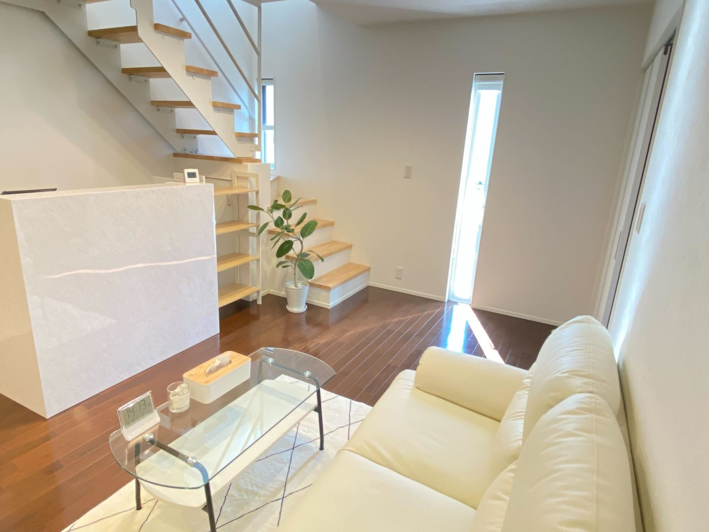
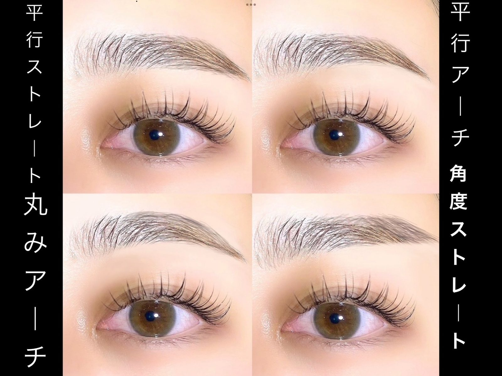
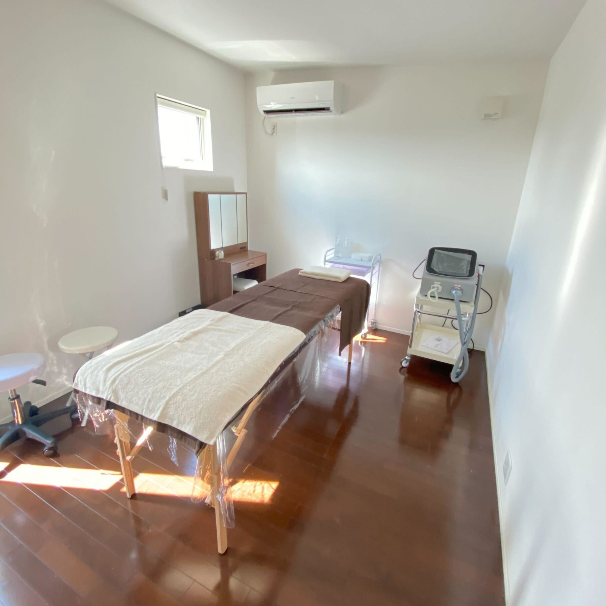
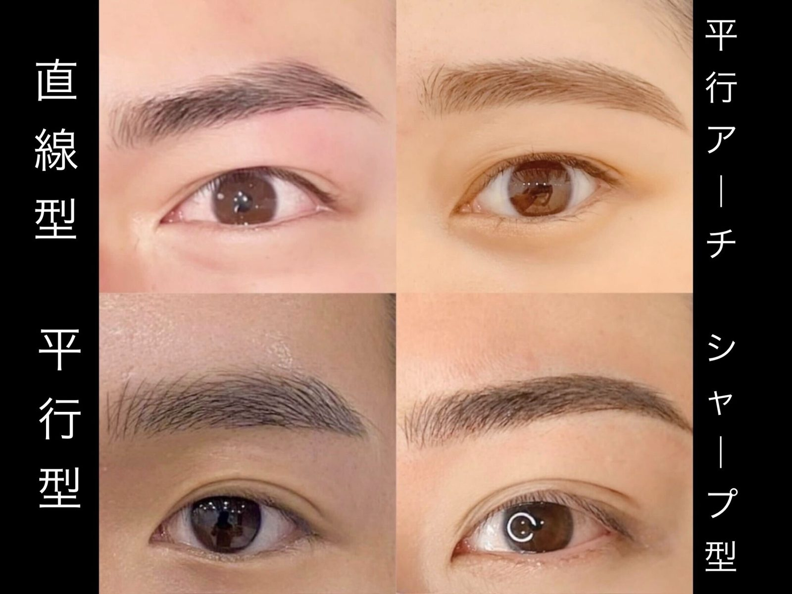

丁寧なカウンセリング
骨格・雰囲気・ライフスタイルに寄り添い、自然に馴染む眉をご提案します。
Eyebrow Salon Brand
眉を変えることで、表情が変わる。表情が変わることで、毎日が少し前向きになる。TempoFeliceは、あなたらしい美しさを引き出し、日々に幸福な時間を届けるアイブロウサロンです。



Concept
TempoFeliceが大切にしているのは、ただ眉を整えることではありません。お客様一人ひとりの骨格・雰囲気・ライフスタイルに寄り添い、自然体で美しくいられる眉をご提案します。
鏡を見るたびに、少し前向きになれる。自分の表情をもっと好きになれる。そんな幸福な時間を、TempoFeliceはお届けします。
Why TempoFelice
仕上がりの美しさだけでなく、過ごす時間の心地よさまで大切にしています。
骨格・雰囲気・ライフスタイルに寄り添い、自然に馴染む眉をご提案します。
作り込みすぎず、あなたらしさを引き出します。
浜松・浜松駅前・静岡・鹿児島天文館に展開。
清潔感や第一印象を整えたい方にもおすすめです。
Service
眉WAX＋美眉スタイリング、HBL、眉WAX、間引きなど、眉毛サロンとして一人ひとりに合わせた施術をご提案します。
余分な産毛やラインを整え、自然な美眉へ。
毛流れと形を整え、立体感のある眉へ。
眉の毛流れを整え、扱いやすい印象へ。
眉まわりをすっきり整えます。
濃さや重さを調整し、抜け感のある眉へ。
第一印象を整えたい方にも対応しています。
Design Gallery
眉の形で表情の印象は大きく変わります。

Flow
お悩みや理想を丁寧に伺います。
骨格や毛流れに合わせてご提案します。
眉WAX、HBL、間引きなどを行います。
メイクやお手入れ方法もお伝えします。
Voice
Hot Pepper Beautyに寄せられた口コミ傾向をもとに、HP用に要約してご紹介しています。
初めてでも安心できた
初めての眉サロンでも、丁寧な説明とやわらかい接客で緊張せず過ごせたというお声をいただいています。
自分に似合う眉がわかった
理想のイメージや骨格に合わせて提案してもらえたことで、仕上がりに満足できたという声が多く寄せられています。
毎日のメイクが楽に
眉の形や毛流れが整うことで、朝の支度や眉メイクがしやすくなったというお声があります。
メンズでも通いやすい
男性のお客様からも、清潔感が出た、雰囲気が良く通いやすいというお声をいただいています。
施術が丁寧でリラックスできた
施術中の声かけや確認が丁寧で、リラックスして過ごせたという声が目立ちます。
痛みや不安への配慮があった
眉WAXの痛みやリスクについて説明があり、施術中も確認してもらえて安心できたという声があります。
FAQ
はい、初めての方も安心してご来店ください。
できるだけ自己処理を控えた状態でのご来店がおすすめです。
普段のメイクでお越しいただいても大丈夫です。
はい、メンズアイブロウにも対応しています。
HBLは眉の毛流れを整える施術、眉WAXは余分な産毛やラインを整える施術です。
各店舗の公式LINEまたはHot Pepper Beautyよりご相談ください。
現金、クレジットカード、PayPay、iD、QUICPayをご利用いただけます。
初回（新規）は約60分、2回目以降は約30分が目安です。メニューや眉の状態により前後する場合があります。
ご予約時間に遅れる場合や日時変更をご希望の場合は、お早めにご連絡ください。当日キャンセルは施術料金の50％、ご予約時間を10分過ぎてもご連絡がない場合は無断キャンセル扱いとなり、施術料金の100％をご請求いたします。詳しくは店舗ページのキャンセルポリシーをご確認ください。